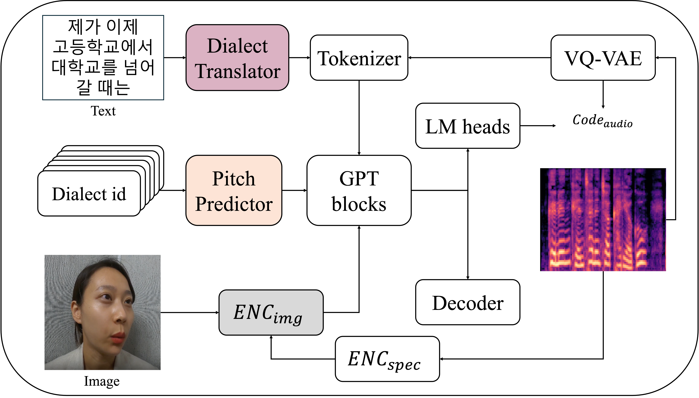
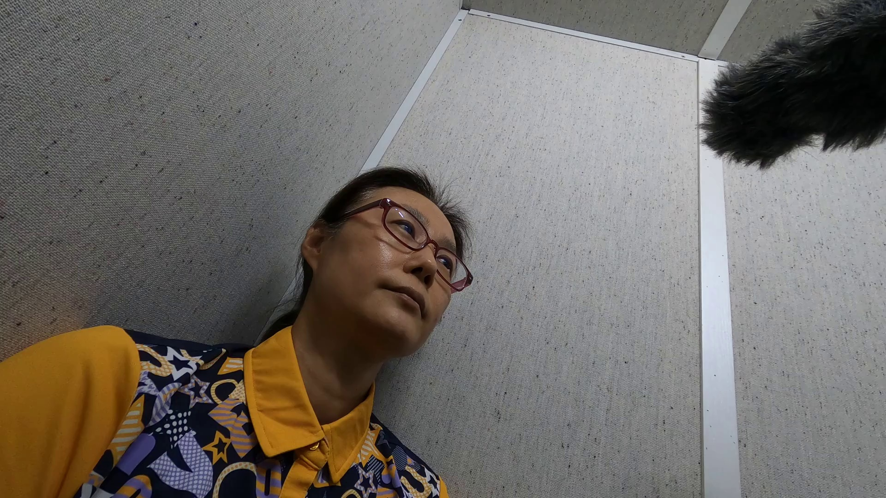
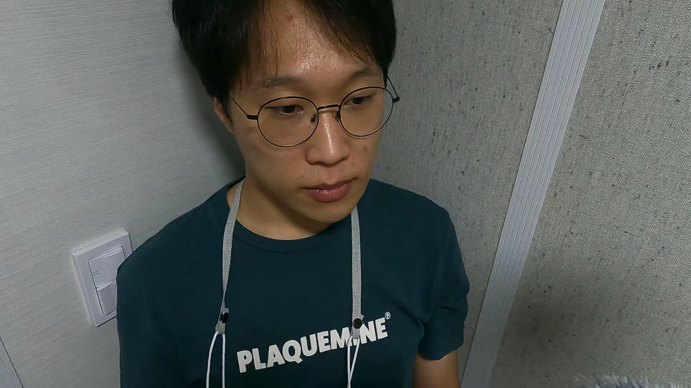

Abstract. Face-based speech synthesis emerged as a promising alternative in settings where clean reference audio data are scarce or noisy. However, existing studies hardly addressed the challenge of modeling dialectal prosody, which is essential for preserving linguistic diversity and naturalness. To address this issue, we propose K-DIALECT, a multimodal text-to-speech(TTS) framework that generates speech from only a face image and dialect identifier. The model incorporates a face encoder to disentangle the speaker identity and style, a dialect-conditioned pitch predictor to explicitly model prosody, and a FiLM-based fusion module to integrate the pitch and style into a unified representation. Experiments on six Korean dialects show that our method achieves higher dialectal fluency and naturalness than a strong voice-based baseline while maintaining competitive speaker similarity. K-DIALECT achieved a SECS of 0.70 and a WER of 0.25, confirming that it preserves both similarity and intelligibility. Subjective evaluations further reveal that the improvements are especially pronounced for dialects with distinctive pitch variations, and listeners consistently preferred our outputs. This work represents the first attempt to extend face-based TTS to low-resource dialectal synthesis, providing a foundation for future research on multilingual and extremely low-resource speech synthesis.
| Seoul | |||||
| Image | Text (Korean) | Text (English) | XTTS | Ours (w/o PP) | Ours |
|---|---|---|---|---|---|
| 몇달전 지인 결혼식에서 축가를 담당했었는데 신랑이 입장했을 때보다 박수를 많이 받은 것 같아 살짝 미안했습니다. | A few months ago, I was in charge of the celebratory song at a friend's wedding, and I felt a little sorry because I seemed to receive more applause than the groom did when he entered. | ||||
|
Romanize: Myeotdaljeon jiin gyeollonsigeseo chukgareul damdanghaesseonneunde sillang-i ipjanghaesseul ttaeboda baksureul mani badeun geot gata saljjak mianhaesseumnida. |
|||||
| Gangwon | |||||
| Image | Text (Korean) | Text (English) | XTTS | Ours (w/o PP) | Ours |
| 남들은 시간이 왜 이렇게 느리게 가냐 이렇게 말을 하는 사람들도 많은데 | There are many people who say, 'Why does time go so slowly?' | ||||
|
Romanize: Namdeureun sigani wae ireoke neurige ganya ireoke mareul haneun saramdeuldo maneunde |
|||||
| Gyeongsang | |||||
| Image | Text (Korean) | Text (English) | XTTS | Ours (w/o PP) | Ours |
| 괜찮게 했던 아르바이트가 카페 알바였던 것 같습니다 | I think the part-time job I was decent at was working at a cafe. | ||||
|
Romanize: Gwaenchanke haetdeon areubaiteuga kape albayeotdeon geot gatseumnida |
|||||
| Jeolla | |||||
| Image | Text (Korean) | Text (English) | XTTS | Ours (w/o PP) | Ours |
|  | 그게 뭐야 그럼 그 인스타 팔로우를 받으면연애를 할 수 있잖아 | What's that? Then if you get that Instagram follow, you can get into a relationship, can't you? | |||
|
Romanize: Geuge mwoya geureom geu instapeolloreul badeumyeon yeonaereul hal su itjana |
|||||
| Jeju | |||||
| Image | Text (Korean) | Text (English) | XTTS | Ours (w/o PP) | Ours |
|  | 졸업식 같지도 않은 졸업식 해 가지고 잘도 서운허켜 아이들 | I was so sad, kids, because we had a graduation ceremony that wasn't even like a graduation ceremony. | |||
|
Romanize: Joreopsik gatjido anheun joreopsik hae gajigo jaldo seounheokyeo aideul |
|||||
| Chungcheong | |||||
| Image | Text (Korean) | Text (English) | XTTS | Ours (w/o PP) | Ours |
| 전지현이랑 이민호랑 나온 푸른 바다의 전설이라는 드라마가 있는데 | There's a drama called 'Legend of the Blue Sea' that starred Jun Ji-hyun and Lee Min-ho. | ||||
|
Romanize: Jeonjihyeonieang iminho-rang naon pureun bada-ui jeonseoriraneun deuramaga itneunde |
|||||
BibTex Code Here